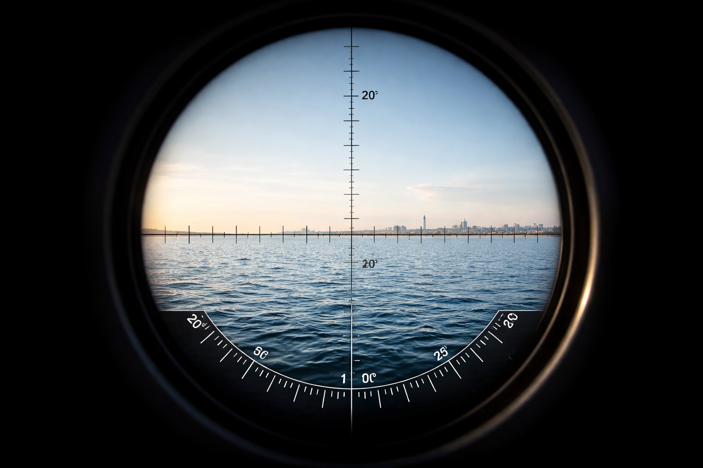

A perspektíva szerepe a távolsági észlelésekben

A perspektíva az egyik legalapvetőbb, mégis leginkább félreértett jelenség az észlelésünkben. Mindennapi tapasztalat, hogy a távolodó tárgyak egyre kisebbnek látszanak, függetlenül attól, hogy valójában nem változik a méretük.
Egy hosszú, egyenes út két oldala a távolban összetartónak tűnik, miközben tudjuk, hogy a valóságban párhuzamosak. Ugyanez a vizuális törvény érvényesül hegyek, épületek, hajók és bármilyen nagy kiterjedésű objektum megfigyelésekor. A perspektíva nemcsak a méretérzetet befolyásolja, hanem azt is, hogy mit látunk és mit nem.
Távolság növekedésével a kontraszt csökken, a részletek elvesznek, és a tárgyak beleolvadnak a háttérbe. Ez gyakran kelti azt az érzetet, mintha egy objektum „eltűnne”, holott valójában csak a látásunk határához ér. A perspektíva önmagában képes magyarázatot adni arra, miért nem látunk végtelen távolságokra.
Fontos megérteni, hogy az eltűnés nem feltétlenül fizikai akadály vagy forma következménye. A szemünk és az agyunk együtt dolgozik, és bizonyos ponton egyszerűen nem tud több információt feldolgozni. Ez a jelenség fényképeken és optikai eszközökkel is megfigyelhető. Nagy zoom használatakor gyakran „visszajönnek” olyan részletek, amelyek szabad szemmel nem voltak láthatók. Ez arra utal, hogy nem minden eltűnés végleges vagy abszolút. A perspektíva figyelmen kívül hagyása könnyen félrevezető következtetésekhez vezethet. Éppen ezért a távolsági megfigyelések értelmezésénél mindig érdemes elsőként ezt a vizuális törvényt figyelembe venni.